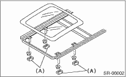

SUNROOF/T-TOP/CONVERTIBLE TOP (SUNROOF) > Sunroof Lid
REMOVAL
1. Completely close the sunroof lid, and then open the sunshade.
2. Remove the four covers (A), and then remove the eight nuts.

3. Remove the sunroof lid carefully.